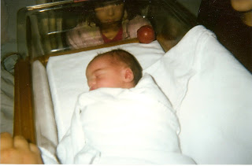

The Patron Saint of the "Leave Us The Hell Alone" Caucus: Charlie Anderson (James Stewart), the Individualist hero of the film Shenandoah.
“Virginia needs all of her sons, Mr. Anderson."
“That might be so. But these are my sons! Mine! They don’t belong to the state! When they were babies, I never saw the state coming around here with a spare tit. We never asked anything of the state, and never expected anything. We do our own living, and thanks to no man for the right."
Charlie Anderson, a widowed father of six sons, deflects the demands Lt. Johnson, leader of a Confederate conscription gang near the beginning of the film Shenandoah.
The kind and thoughtful people who seek to relieve us of the burden of planning and managing our own lives are preparing to seize our children, and any of us who happen to be within the targeted age range (most likely between 18 and26). With quiet persistence, the Draft-Nappers are plotting to reinstate military slavery.
As with every presidential administration since that of George Bush the Elder, Barrack Obama and his comrades (particularly the leering wad of incarnate malice known as Rahm Emanuel) are famously enamored of the idea of government-mandated "national service."

One of Obama's cherished conceits is that his reign will somehow usher in an era of national service that will be both "universal" and "voluntary" -- as if disagreements over the merits of government-imposed labor, and the type of activity that qualifies as "service," would evaporate when exposed to his irresistible charisma.
On the strength of American Grit: What it Will Take to Survive and Win in the 21st Century, a new book by Republican neo-con strategist Tony Blankley, it seems clear that Obama's Republican critics will actually out-flank him to the left on the issue of conscription. Blankley's critique of Obama's National Service proposal is not that it would be an impermissible imposition on individual rights, but that it is insufficiently militaristic and of inadequate scope.
The second chapter of Blankley's slender book is entitled "Bring Back the Draft." A return to military slavery is mandatory, he writes, in order "to replenish our dangerously over-stretched armed forces."
Rather than repudiating the interventionism that has left the military "dangerously over-stretched," Blankely takes the opposite view, giddily anticipating additional wars with Iran and Pakistan, and an open-ended, generations-long conflict with the amorphous threat he, and others of his dishonest ilk, have designated "Islamofascism."
As Blankley acknowledges, "there is a limit to the number of people willing to volunteer to be a soldier -- a dangerous career that is often severely disruptive of family life -- and that pool has clearly been tapped out." Accordingly, "We will soon be faced with the choice of severely scaling back our role in the world or expanding the army through conscription."
One measure of the depth of Blankley's totalitarian impulses can be found in the fact that he never considers the possibility that scaling back "our" role in the world (that is, the role assumed by the government ruling us) is the correct and moral thing to do. Nor does he display any hint of considering the possibility that the thin trickle of volunteers to fight the wars that tickle his inverted libido represents something of a public referendum.
If the so-called war against "Islamofascism" were really a life-and-death struggle akin to the Battle of Salamis, recruiting an army at the point of a gun would hardly be necessary. Conscription is never necessary to inspire men to defend their homes and families, and it is never used for that purpose. It is carried out for the sole purpose of compelling men to kill and die on behalf of the State and the degenerate clique running it.
The British-born Blankley, former Chief of Staff to Newt Gingrich and current pundit for both the Washington Times and The McLaughlin Group, has the mien of a gangster, which he cannot help. To judge from his writings, he also has the soul of a Commissar.

His book is a brief but tedious harangue devoted to the theme of using the power of the government to compel people to love and serve that same government. His chapter on the draft abounds with the language of collectivist compulsion, most of it performed in the key of "communitarianism."
Despite the fact that most Americans eschew military service, he insists that it would be possible to forge a "national consensus" on behalf of reinstituting military slavery; such a "consensus" would be an agreement among those heading the two major wings of the ruling Establishment Party, rather than widespread support among the public (which itself would not make conscription legal, constitutional, or just).
Sentencing other people's children to servitude, or worse:

"The Bloody Vote," a WWI Australian anti-conscription pamphlet condemned those who voted in favor of a referendum on the military draft.* (Click to enlarge.)
Blankley's vision of "consensus" is probably quite similar to that of the despicable Woodrow Wilson, who -- as he introduced a bill to impose conscription -- declared that that the draft "is in no sense a conscription of the unwilling; it is, rather, selection from a nation which has volunteered in mass."
The specifics of Blankley's proposal are quite familiar to those who have been watching, with growing disgust and alarm, as proponents of conscription start to fine-tune their arguments and oil the machinery of military servitude: He calls for "a compulsory program for all Americans aged eighteen or nineteen, men and women, after most have graduated from high school. The military, reviewing these graduates' transcripts, extracurricular activities, and medical reports, would select however many they needed to fulfill their draft allotments for a two-year period of military service. Those not chosen by the military would undertake a two-year civil service obligation," which may include "homeland security" roles of various kinds.
This is essentially the same proposal contained in legislation sponsored by Rep. Charles Rangel (D-New York), who, oddly enough, is treated with reflexive partisan scorn by Blankley. And it is also quite similar to the plan proferred in the Establishment publication Foreign Policy by retired U.S. Army Colonel William L. Hauser, a member of the Council on Foreign Relations, and naval veteran Jerome Slater of the State University of New York, Buffalo.
The program envisioned by Hauser and Slater would "combine a revived military draft with a broader public-service program as already practiced in some European states -- a `domestic Peace Corps.'" Unlike Blankley, they would permit draftees "to choose between military and nonmilitary service" -- that is, to select their preferred form of servitude -- at least initially. Given that providing additional military manpower is the entire point of the proposal, the domestic service "option" would probably last just long enough to get the measure enacted by Congress.
Discussing what they consider the ancillary benefits of military slavery, Hauser and Slater list what they consider "a number of positive social consequences." For instance: "Conscription will enable the forces to reflect the full spectrum of American pluralism, in terms of both socioeconomic classes and racial/ethnic groups. It is unacceptable that less than 1 percent of the country’s eligible population serves in the armed forces, with almost no war-relevant sacrifice being asked from the rest of society. It ought to be axiomatic that the hardships and dangers of military service be more widely shared."

"Dulce et decorum est?" Hardly: "For Leader, People and Fatherland he gave his life," announces this form letter filled out by a unit commander each time some hapless German conscript wasted his life in the service of "his" government.
This might be "axiomatic" to someone who has deeply imbibed the spirit of Prussian militarism. For a commercial republic, there is nothing "unacceptable" about a military that is largely peripheral to public concerns, rather than being -- as Hauser and Slater apparently desire -- the central, defining social institution.
In a fashion similar to that of Hauser and Slater, Herr Blankley scorns Americans for neglecting the "common life," of losing a sense of "common purpose and common destiny." Restoring the draft, he insists, will bring about "greater national cohesion and unity" to a country that has become "atomized." Absent such benevolent regimentation, Blankely laments, "our country will degenerate into nothing more than a giant trading bazaar where many different people happen to live together."
Oh, please spare us the ignominy of living in a peaceful country where self-regulating people engage in free, mutually beneficial commerce, rather than functioning as living cogs in the State's killing apparatus!
Before signing on as Chief of Staff to the self-appointed "Teacher of the Rules of Civilization" (that would be "Mr. Newt" himself), Blankley was a speechwriter for Ronald Reagan. It's bad form for those who craft the words that dribble down the presidential chin to take credit for their contributions, so we're not sure exactly which of Reagan's orations benefited from Blankley's wordsmithing.
However, we can be confident that Blankley had nothing to do with Reagan's assessment of Jimmy Carter's decision to re-activate the Selective Service System in 1979. Reagan pointed out that conscription "rests on the assumption that your kids belong to the state. If we buy that assumption them it is is for the state -- not for parents, the community, the religious institutions, or teachers -- to decide who shall have what values and who shall do what work, when, where, and how in our society. That assumption isn't a new one. The Nazis thought it was a great idea."
The Nazis' totalitarian siblings in the Communist camp were equally enamored of the concept of universal, compulsory service, including conscription; after all, that principle was inscribed by the finger of Karl Marx as the eighth plank of the totalitarian decalogue, the Communist Manifesto.
Like Nazi and Communist totalitarians, Blankley believes in the state ownership of the most intimate form of private property: The individual.
Oh, sure, his book is littered with puerile, rant radio-caliber invocations of the sanctity of the "free market" and "private enterprise" (this despite the fact that he supports a national industrial policy for the supposed purpose of achieving "energy independence"). But he apparently cannot understand or isn't honest enough to admit that a government that can steal one's very person for the purpose of military service can take whatever else it wants -- and do whatever it wants -- at any time of its choosing.
Pursuing evil dreams of state-mandated coercion and death: Bernard Baruch, Woodrow Wilson's Commissar for the war economy.

The operational principle in conscription, as the vile Bernard Baruch, head of the Wilson Junta's War Industries Board, pointed out in August 1918, is that "every man’s life is at the call of the nation and so must be every man’s property.... The state is all; the individual is of importance only as he contributes to the welfare of the state. His property is his only as the state does not need it. He must hold his life and possessions at the call of the state.”
That principle was embedded Section 18 of the Selective Service Act.
As Thomas Woods, Jr. and Kevin R.C. Gutzman point out in their book Who Killed the Constitution?:
"That section stipulated that the president could order from any manufacturer that produced goods needed by the military or the Atomic Energy Commission, once the contents of the order had been approved by Congress. If a manufacturer failed to fulfill the order by the president's deadline, the president could have that manufacturer's property seized and operated for the purpose of producing the goods needed by the government."
Certainly, the government would have to provide "just compensation" for the stolen property, just as it pays its military slaves a token wage. But the assumption here is that all property -- including our individual lives -- belongs to the state, and that we enjoy the use of our property and the ability to direct our own lives only by the grace of the state.


No, he doesn't belong to the state: Justus Samuel Grigg, born on February 3, 2009. (Click to enlarge.)Even as they enlarge upon the horrors -- whether real, exaggerated, or fabricated -- of "Islamofascism" in distant lands, Blankley and his fellow Draft-Nappers are diligently working to impose totalitarianism here at home.
No scimitar-wielding Mohammedan has materialized on my doorstep to demand that I surrender my children as a "blood tax" demanded by the state. I know what variety of greeting I would give such a personage were he to appear. The same is true for any functionary of any government who would presume to claim my children as the property of the official gang that employs him.
Music Video Extra
"Military Man" by Gary Moore and the immortal Phil Lynott -- not, alas, by Thin Lizzy, as mistakenly reported in the title. This was the last live performance by the irreplaceable Mr. Lynott before he died, at age 36, of his own foolish and self-destructive drug addiction.
This is a particularly fierce rendition of the song, which could serve as a soundtrack to a reading of Smedley Butler's tract "War Is A Racket."
__
*In my original version I mistakenly referred to a "British" referendum on conscription during WWI. I regret the error, and appreciate the correction from commenter Cindy Williams.
 On sale now!
On sale now!
Dum spiro, pugno!
41 comments:
Mr. Grigg, this is your best, hardest-hitting essay yet. No, no, we DON'T belong to the state--certainly your beautiful little boy doesn't or the sweet-faced girl child in the picture. The warmongers can employ any linguistic misdirection they want, but those in the military are simply hired killers whether they fully realize it themselves or not. Thanks for your clarity bringing this truth to light.
Mimi -- Thank you. I neglected to identify the little girl visible in the background; that's our 4-year-old daughter, Sophia Faith -- or, as I like to call her, our "Baby Lamb."
I wonder if the roly-poly Blankley would be the first to enlist and set the example by undergoing the rigorous, often dehumanizing indoctrination and training that all members of the military go through in basic training (a rhetorical question, of course).
I sincerely hope that in response to this renewed attempted at slavery to the State that Ron Paul introduces a bill into Congress that reiterates a proposition first put forth by Smedley Butler in War is a Racket. Ron's bill would require that any and all commitments of military action by the president or intent to declare war by Congress (hah!) be submitted to referendum. HOWEVER, only males of military draft age would be allowed to vote in said referendum and any who vote in favor of military action or war would be automatically enlisted into the armed services.
That should bring warmongering by proxy to a screeching halt in a hurry.
William,
Many congratulations on the birth of your son. I have a 4 month old little girl, so the claims of the state on her (and her older brother) are things which I can relate to very well.
I have to share an unfortunate pun, though. I take it that you are not in favor of "Justus for all?"
Congratulations,
Jeff
I've noticed one thing regarding your posts, Mr. Grigg, and the people who write comments about them. You do not seem to oppose the military as a rule, nor are you a pacifist, correct? You are openly hostile to the draft and the military-centered societies that have had them in the past. And I respect you greatly for that. I also think your research and views of the ever-expanding police state is the best I've yet to find anywhere.
However, I have to say that sometimes I get the feeling, based on the comments, that people might be interpreting your posts in a slightly different way than perhaps you intend; it seems that many people tend to regard the military, and all those who are part of it, as somehow evil (in a general sense and not just speaking about the US military). I may be completely wrong, but it seems that many people who comment on this blog are overly pacifistic, or naive at the very least.
I believe that one must live his life how he sees fit, and those who would seek to prevent one from doing so must be resisted. This is freedom. But, far too many libertarians I know and have spoken to are not willing to take that to it's logical conclusion - violence. Most Americans have not experienced violence, and thus don't know it, or know how to deal with it, and people fear what they do not know. Instead of being taught violence, and the need to avoid it, by responsible people (parents don't teach kids how to fight anymore, and schools will suspend or expel kids if they defend themselves), they learn it from other sources. This is not necessarily the problem as much as it is perhaps a symptom of a larger degradation of society.
But, those who profess to love freedom and seek to be free must be willing to fight for that, violently if necessary, and military service is an excellent way to learn how.
I'm just going to make that point and leave it. I don't really want to argue the merits of violent resistance vs. peaceful civil disobedience. That argument is old and tired and needs no more discussion. They both have their merits, and their adherents have different mindsets. Personally, I think that violence must be the absolute last action taken, after peaceful means have been exhausted, over and over again.
Liberranter said:
"I wonder if the roly-poly Blankley would be the first to enlist and set the example by undergoing the rigorous, often dehumanizing indoctrination and training that all members of the military go through in basic training..."
I don't think the methods of establishing unit cohesion through basic training are pertinent to this discussion. It seems to me that the hardships that recruits go through in basic training are designed to do several things, chief among them is a) make them more willing to kill, and b) make them better able to deal with stressful situations with their teammates, achieved through a mild form of stockholm syndrome - if they suffer together, they will work better together under adverse conditions.
First, the willingness to kill. Most people cannot fathom the idea of having to kill another person. I have trouble with the idea, and I've been through years of martial arts and a little bit of combat training, though I've never been in the military. But, part of being human is the possibility of having to kill another human being. Indeed, this is true of most animals.
If the US Supreme Court had an ounce of integrity and a single testicle among them, they'd shoot down any form of compulsory service to the state as a clear violation of the thirteenth amendment.
There was a fellow by name of John Singer some years back in Utah.
He'd been a child in Germany and learned to hate the regimented lifestyle of National Socialism.
So he thought he was in a free nation here in USA.
WRONG.
He took a few loads of BUCKSHOT in the BACK, yes the BACK, I've seen the autopsy photos from the book by the fellows one of whom wrote for the NY Times at one point.
They got away with it, cold-blooded murder.
That pretty little innocent baby, what kind of country does he face in the future. His dad can do only so much, maybe there will be enough to save it all. I hope so for your kids and mine.
As far as RAHM ISRAEL EMANUEL, he served in the IDF but not the US military. His father was in the Irgun
U.S. war journalist Pat Dollard:
Let me tell you right now, no exaggeration. Rahm Emanuel is the devil. He is . . . a Goebbels, a Mengele, a perfect Cromwell who would, without the
faintest evidence of hesitation washing across his face for even a millisecond, order and even personally execute each and every human being he or Obama perceived to be an enemy of the regime. And if you ever personally offended him, and he had the opportunity to kill you, he would probably do it by starting with your children as you were made to watch. He is a bad guy.
as per H.R. 393 (Rangel), the current target draft age is not 18-26 but 18-42 with no deferments after age 20. So Will, depending, they may come after you as well as your youngins.
I maintain that if the service (draft or otherwise)age is 32, there would be no war. Harder to convince a 32-year old of the merits than a just-out-of-school kid.
Have you seen the recruiting commercials about the kids having to ask/talk their parents into "letting" them join? Do what mamma tells you; do what sargent tells you...easy transition.
In any case, having just reached the age of descretion I am finding I have less and less descretion every day (just became an official 40 woohoo!.
They got 2 years to come after my ass and good luck with that...
In agreement but wondering:
How do you address the rite-of-passage/character development concerns? Two quotes, out of context, usefully allude to them:
"In present-day modern societies, most young people are brought up by their families at home. Often they only go on their way into the world at age eighteen or nineteen, if then. This was not true in a great many previous societies. In them, boys (not girls, who were usually allowed to remain at home until they were married) were taken away from their fathers and, above all, their mothers, so that the process of making men (read warriors, or less often priests) of them could get under way...." Martin Van Creveld, The Culture of War at 46-47.
"These rituals of transformation are nearly universal. In the Boy Scouts, on the football team, at boot camp, in the frat house, young males learn to view their families with some detachment and to see themselves as part of a group that will someday be in charge. Young women face a parallel set of initiation rituals, sometimes more daunting than those of the male...." Thomas Fleming, Morality of Everyday Life at 125.
My response: The concerns are real, and the relative lack of such rites of passage in contemporary American culture may be contributing to serious problems. However, more of the same isn't going to get us out of the problem. The growth of the central government has contributed materially to the problem, so more of it won't help. Our current regime is orders of magnitude more centralized and immoral than when last it might legitimately made such demands (ironically, that last time might have been the time period referred to in your opening). Until and unless our governing and culture aimed and moved towards subsidiarity, significantly cut taxes, adhered to a moral non-interventionalist foreign policy, and instituted a whole raft of other reforms, which would basically add up to a revolution --I couldn't see supporting these bozo's with their mandatory service ideas.
Thoughts?
"How do you address the rite-of-passage/character development concerns?"
Christopher, the quotes you posted seem like attacks on the family, the most important governing institution under God's sovereignty.
What kind of "character" do young men and women develop when they are programmed to be "detached" from their families? Perhaps the kind of character which will allow them to consider euthanizing their elderly parents at the behest of the state? I certainly agree with you that subsidiarity is needed.
I don't understand "rites of passage". It sounds pagan to me.
I wonder if with the increasingly infertile economic landscape, the regime will be able to feed itself by feeding millions of hungry and hopeless volunteers. In this scenario a draft will not be necessary for the wheels of empire to keep turning.
Jerri Lynn Ward,
I don't think it is anti-Christian to acknowledge certain facts of life such as children leaving the nest, the importance thereof, and that some pagans were virtuous.
But I will admit that I chose the quotes in part because --out of context mind you, they might appear provocative. More importantly, however, I believe they allude to a summary of one of the abusive arguments the regime might put forth. Ah the sadism! Having worked to eviscerate the family and indirectly corrupt the culture and character of the people, men like Blankley and Rangel are going to blame the body politic, the very victim of their policies, and propose MORE government programs as the solution. That's why I put forth those quotes. The point is not that families should bow to the state, but that rites of passage --metamorphosis from childhood to adulthood, growth, change, is important not just for the individuals and families involved but for the society or culture at large. I'm just guessing the regime will try to use that truth against us. So how do we who still believe in family and church as countervailing institutions counter that argument?
Christopher, I take from your posts that you think the Authoritahs will not be swayed by the self-evident moral perversity of conscription. Sadly, I am inclined to agree.
Therefore, I should argue the point you raise this way: The purpose of the armed forces (standing or militia) is to kill people and break things, preferably with a level of proficiency sufficient to deter a would-be aggressor. Using the armed forces as an instrument to forge greater social cohesion is orthogonal to its purpose, and can only make it less effective.
In fact, when asked, senior officers will say much the same thing -- in public, anyway. I think they're telling the truth.
"The point is not that families should bow to the state, but that rites of passage --metamorphosis from childhood to adulthood, growth, change, is important not just for the individuals and families involved but for the society or culture at large."
So how could this work without alienating youth from God and family? I think that I should go read the Bible on this point.
Somehow, I don't think the modern or imperial military is the answer. When men were defending hearth and home, such as during the American War of Independence, weren't they fighting side by side with family, at least in the militia?
How is it possible that your sons turned out to be so handsome and your daughters breathtakingly beautiful?
But you, on the other hand, you are sooooooo.....well........you know...are so...um....so....
Will, great post. It's good to remind people why they are on this earth and to whom they owe their existence and service. Their God and their families. And to do justice and charity to all others.
The subject of recruitment reminds me of a conversation Voltaire had with a Quaker once:
" "We never go to war. This is not because we fear death. On the contrary, we bless the moment that unites us with the Being of Beings. It is because we are neither wolves, tigers nor mastiffs, but Christian men.
"Our God, who has commanded us to love our enemies and to suffer without complaining, would not permit us to cross the seas to slaughter our brethren, just because murderers clothed in scarlet, wearing caps two feet high, enlist citizens by making a noise with two little sticks beating on a stretched ass's skin.
When after a victory, all London is lit up with illuminations, and the sky is ablaze with fireworks, and the noise of thanksgiving is heard from bells, organs and cannons, then we groan in silence about the murders which caused the public rejoicing."
While I do not believe in the absolute rejection of violence, as the Quakers do, (and I deeply respect them,) I do agree that no Christian man may ever rejoice in killing. Especially murder: when state-hired/enslaved killers slaughter men (and women, and children) who pose no actual threat threat of invasion or occupation. It does not matter, objectively, how much or how sincerely the killers believed their victims posed a threat.
I will never be able to respect any human being in any tax-funded military. I will understand why they think the way they do. I will understand their tragically misplaced desire to be a part of something bigger than themselves. I will not hate them. But I will never respect them.
-Sans Authoritas
Anon @ 7:20 -- I gather you're simply too polite to say that I have a "lived-in" face, right?
Actually, the answer to your conundrum is really quite simple: My children all have their Daddy's looks, because Mommy still has hers.
A wonderful son! Blessing on you and yours sir. May your family grow-up in a free-country......mthead
great article but the WWI era cartoon is from Australia, as the UK did not have a referendum to impose conscription
draf allotments*
draft?
declaogue*
or decalogue?
William,
Pay no attention to that jackass, Anon @ 7:20. You're a very good-looking fellow, a sexy man if I don't say so myself.
-Larry "Liberace" Goodrich
Uh, thanks, "Liberace," I guess.... Say "hi" to your brother George for me!
When they start the Draft again. Dick Cheney, and Tony Blankley should go first.
Put em with the snipers, since you’re never too old to stand up for target practice.
Dear Mr. Grigg,
Another fine essay. Your assessments of Rahm Emanuel and Bernard Baruch are refreshingly perceptive. So good to see someone who does not fawn and grovel over the hobnailed jackboots of our "betters."
I recently came across a marvelous little speech which I would like to share. It is from the pirate captain, "Black" Sam Bellamy, after he had captured the sloop of one Captain Beer in 1717. He invited Captain Beer to join his pirate band, but the good captain adamantly refused, and Bellamy's crew insisted the captured sloop had to be sunk to prevent it raising the alarm and provoking a pursuit. Bellamy said to Beer:
"I am sorry they won't let you have your sloop again, for I scorn to do any man a mischief when it is not to my advantage. Damn the sloop, sir, we must sink her, and she might be of use to you.
"Though, you are a sneaking puppy, and so are all those who will submit to be governed by laws which rich men have made for their own security; for the cowardly whelps have not the courage otherwise to defend what they got by knavery.
"But damn ye all together; damn them for a pack of crafty rascals, and you who serve them for a pack of hen-hearted numbskulls. They vilify us, the scoundrels do, when there is only this difference between us: They rob the poor under the protection of law, forsooth, and we plunder the rich under the protection of our own courage. Had you not better make one of us, than sneak after these villains for employment?"
When the good Captian Beer still demurred that his conscience would not permit it, Bellamy concluded:
"You are a devilish conscience rascal, sir. I am a free prince, and I have as much authority to make war on the whole world as he who has an hundred sail of ships at sea, and an army of an hundred thousand in the field; and this MY conscience be. But there is no arguing with such snivelling puppies, who allow "superiors" to kick them about deck at pleasure."
I wish I could have met Black Sam. He sounds like a man after my own heart. His flagship, the Whydah, which sank in a storm in 1717 taking Black Sam, a vast amount of loot, and all but two survivors, down with it, has been located and carefully excavated, and some of the 100,000 recovered artifacts may be seen at the Whydah museum in Provincetown, MA, probably the best museum of life aboard a pirate ship in the world.
Yours sincerely,
Lemuel Gulliver.
Everyone, please bring attention to an Oregon bill being circulated right now called HB2556. It will allow the Govenor to block deployment of National Guard troops. This would set a great precident if it passed, allowing citizens in other states to force their Gov to do the same. Do a google search for Oregon news and you"ll see it mentioned in a Salem story. Please spread the word.
Woodrow Wilson never did a day in the military. Neither did Tony Blankley.
If Blankley believes so strongly in a draft, why doesn't he get his own wretched self over in Iraq or Afghanistan on the ground as an infantry private?
Congrats on the new baby.
Ken,
That's a good opening salvo. I'll use that.
My opponent in debate might then say, but because (1) the overall majority of the conscripted will not see combat, and (2) the kids will have the option of choosing non-combat service tasks like in other countries, that criticism doesn't wholly or even substantially undercut the character-building thing we are aiming for.
I could then reply that even children are not stupid, and that they will object to their valuable time being spent learning skills not necessarily of their choosing or of any conceivable use. I could further note that no matter what is said now, the history of large bureaucracies suggests a significant percentage of the conscripts will have their choice for training, if any is even given, will be effectively ignored, and that even if, against the odds they get into the job or skill training of their choosing, it will be subpar as the government need not turn a profit and so will have little incentive to provide a decent service to these kids. Why not just cut taxes, and get out of the way of private individuals and businesses? You'll see competent and useful training and apprentice programs soon enough, I might argue.
JLW,
We completely agree that the modern imperial armed forces is not the answer. I aim to prepare for the arguments I anticipate the regime will make, and that will percolate through their courtiers the major media, until they spill forth from the misguided lips of even such as friends and family.
"So how could this work without alienating youth from God and family? I think that I should go read the Bible on this point."
I suppose no rite of passage works without somewhat inducing a sense of separateness, and possibly alien-ness from one's family. But that's a needlessly pejorative way of looking at the process and the point of the whole thing, which is to form adult men and women ready willing and able to pursue their own vocations. Sense of autonomy might be a better way of looking at it. I'll defer to others on exegesis, but I recall a few passages about a man leaving his mother to cling to his wife, kicking a bad son out of the house, Our Lord being asked to perform a certain work at a wedding, the timing of which appeared to annoy Him a bit.
If we have "national service," that's my time to bail out of the US. My wife and I are too old to be pressed into service, Redcoat style. But I will not allow my daughter to be treated as the property of the ruling class.
Another great column Will, I noticed you also have excellent taste in music too. Congratulations on the new addition to your family.
And thanks to Lemuel, great comment on Captain Black. I'll have to get up to the Whydah museum this summer.
Will, congratulations on your new little boy. Your children are blessed with godly parents. Great article too, providing much food for thought. My five kids are 11 to 2. I can't imagine them being drafted.
Anonymous said...
If we have "national service," that's my time to bail out of the US. My wife and I are too old to be pressed into service, Redcoat style. But I will not allow my daughter to be treated as the property of the ruling class.
8:48 AM
Yeah, and where will you go, the moon?
"the leering wad of incarnate malice known as Rahm Emanuel"
I wish I had written that!
I so appreciate your articles, Mr. Grigg. Thank you for your vigilance and care for the rest of us.
To Pat H., who said even animals kill. Yes, they do, and without compunction: they NEVER dither about whether they "should" or "shouldn't," whether it's moral or right or wrong. They just do BECAUSE that's ALL they are: animals. They can do no other.
For all the stupidity about evolution, we, human beings, "homo sapiens sapiens," "the wisest of the wise," are NOT mere animals.
Therefore, just because animals kill is no REASON for human beings to kill. Especially because someone else -- something no animal suffers from, except trained dogs! -- TELLS them to!
The false conundrum of "rites of passage:" In the ancient Hebrew culture, after God, family was ALL. Israel didn't exist apart from family. A young man passed into "manhood" with a Bar Mitzvah, a demonstrated knowledge of his ability to read and recite and understand the Law of God. He became a full member of the adult community at 30 years of age, which is "why" Jesus started His ministry at around that age. A man gained authority within the community when he had fulfilled some years of experience at being "a man:" responsible, mature in manner and judgment, contributor to his family's welfare, his father's business and household, respected in the wider community.
His wife was chosen for him. According to the Law, he and his wife were to spend one uninterrupted year together after their marriage. He was not even subject to conscription in time of war. He was to please his wife in everything. He and his bride usually lived under his father's roof. His wife became a daughter to her mother-in-law.
The young man "left" his father and his mother to cleave to his wife in that his loyalties changed from his position as a young son, a lamb in his parents' bosom, to his wife's husband.
This was how one became a man in the culture of Jesus' birth.
There was no military requirement per se, but because of the danger of surrounding and often hostile societies, boys were taught to defend themselves, often with mere farming implements.
Being a man was never associated with the military. It was always associated with your mature mental development within your home and society. It was demonstrated in how good a provider you were for both your father's house (Jesus' parable of the Prodigal Son illustrates this quite well) and your own.
There is much to be admired in the social laws God gave to Moses in the desert.
How much better off we'd be today if only we respected and lived them according to our Lord's example and teachings.
Mr. Grigg would never have had to write the things he's felt conscience-bound to write.
Once again, thank you, Mr. Grigg. And congratulations to you and your wife on the birth of your beautiful new son.
No scimitar-wielding Mohammedan has materialized on my doorstep to demand that I surrender my children as a "blood tax" demanded by the state. I know what variety of greeting I would give such a personage were he to appear. The same is true for any functionary of any government who would presume to claim my children as the property of the official gang that employs him.
Can't add much to that.....we don't need to go overseas to fight a war.
FreeMan,
Of course "we" need to go fight overseas. If "we" didn't, the Mohammedans would come over here and burgle our liberties. They would abscond with them after stuffing them into large canvas duffelbags.
But thank goodness all those soldiers protected "our freedoms" from being stolen by the North Koreans, North Vietnamese, Cubans, Filipinos, Afghanis, Iraqis, Panamanians and Grenadans! Because they were just about to invade and "take our rights."
-Sans Authoritas
To Pat H
Having traveled throughout the thrid world I can testify that many countries, even with decadent govts, are much more free than the US. For example within most countries in Latin America, sans Venezuala, it is much easier to live out in the countryside far from the meddlesome nature of the central govt. doing your own thing and not have to worry about suffering some intolerable bullshit from a pesky govt snoop. Your standard of living, using Western standards as our guide, is not the same - but quality of life is far superior. I sure can put up with an outhouse if it means not having some useless parasite monitoring my every move.
I can't wait to hear the bleeding heart bedwetters defend this latest bankster bailout. Some naive simpletons thought they had a friend in Sobama. The next four years are going to be a hybrid of a Clinton third term mixed with a Carter second term and blaming the Republicans is going to wear out fast. Wait till the sycophants get those "voluntary" service and draft notices. I hope they enjoy the change.
Congratulations, Mr. Grigg, on the successful birth of your baby boy, and prayers towards your wife's speedy recovery. Coincidentally,I share in your joy because our blessed daughter has come on the same day as your blessed son. May they both grow happy, strong, and free.
-Morgan
Anonymous said...
To Pat H
Having traveled throughout the thrid world I can testify that many countries, even with decadent govts, are much more free than the US. For example within most countries in Latin America, sans Venezuala, it is much easier to live out in the countryside far from the meddlesome nature of the central govt. doing your own thing and not have to worry about suffering some intolerable bullshit from a pesky govt snoop. Your standard of living, using Western standards as our guide, is not the same - but quality of life is far superior. I sure can put up with an outhouse if it means not having some useless parasite monitoring my every move.
5:53 PM
You may be right, but how long with that last? Are you willing to risk investing in a short when you should be looking for the best long-term investment? Try a freer state in the US, for example. Montana, Wyoming, Idaho, New Hampshire, Vermont, anything. If you wish to live out in the wilderness with little luxury, that's fine, but why do so in a different country?
That jackass Blankley must have _fought_ in the Battle of Salamis. And, as anyone can plainly see, he triumphed magnificently over the Salamis, along with the Bolognas, the Sopressatas, and a few random Gorgonzolas...
The time for debate is over. The time to vote from the rooftops is nearly here.
-AleG
Post a Comment